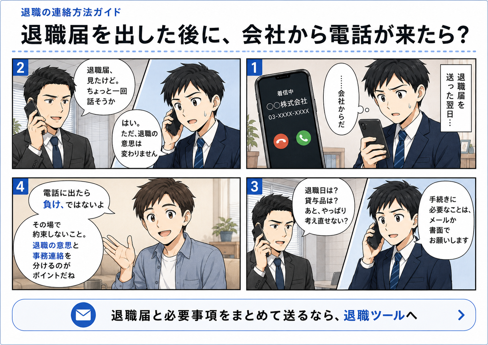

退職の連絡方法ガイド
退職届を出した後に、会社から電話が来たら？
退職届を郵送した後に会社から電話が来ると、焦ってしまう人もいます。 ただ、電話に出たからといって、その場で退職を撤回したり、面談を約束したりする必要はありません。

電話に出ても、その場で決めなくていい
退職届を出した後に会社から電話が来ること自体は、珍しくありません。 退職日の確認、貸与品の返却、書類の送付先など、事務的な確認が必要になることもあります。
ただし、電話の流れで「一度会って話そう」「考え直せないか」と言われることもあります。 その場合でも、その場で返事を決める必要はありません。
事務連絡と引き止めを分ける
会社からの電話では、事務連絡と引き止めが混ざることがあります。 ここを分けて考えると、対応しやすくなります。
- 退職日の確認
- 貸与品の返却方法
- 離職票・源泉徴収票などの書類
- 私物の扱い
- 会社から送ってほしい書類の送付先
こうした手続きに必要な確認は、対応しても問題ありません。 一方で、退職を考え直すかどうか、面談に応じるかどうかは別の話です。
使いやすい返答例
電話に出た場合は、長く説明しすぎない方が安全です。 次のように、短く区切るのが現実的です。
手続きに必要なことは、メールか書面でお願いします。
この言い方なら、退職の意思と事務連絡を分けられます。 感情的な話し合いに引き込まれにくく、後から確認できる形にも残しやすくなります。
電話で約束しない方がいいこと
退職時の電話では、焦ってその場で返事をしてしまうことがあります。 特に、次のような約束は一度持ち帰った方が無難です。
- 退職日を変更する約束
- 面談に行く約束
- 退職を一度保留する約束
- 有給を使わない約束
- 不自然な口外禁止の約束
必要なことは、後で書面やメールで確認すれば十分です。 その場で判断しないことが、トラブルを避けるうえで大切です。
最初から必要事項をまとめて送ると、電話を減らしやすい
会社が電話してくる理由の多くは、確認事項が残っているからです。 退職届だけでなく、退職日、貸与品、必要書類、送付先などをあらかじめまとめて送っておくと、 会社側も事務処理を進めやすくなります。
もちろん、すべての電話を防げるわけではありません。 ただ、事務連絡の往復を減らすことはできます。